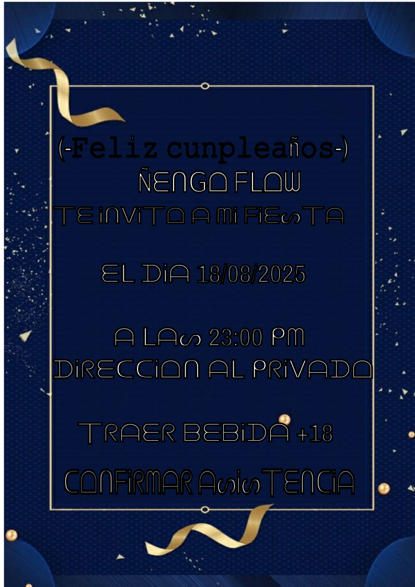
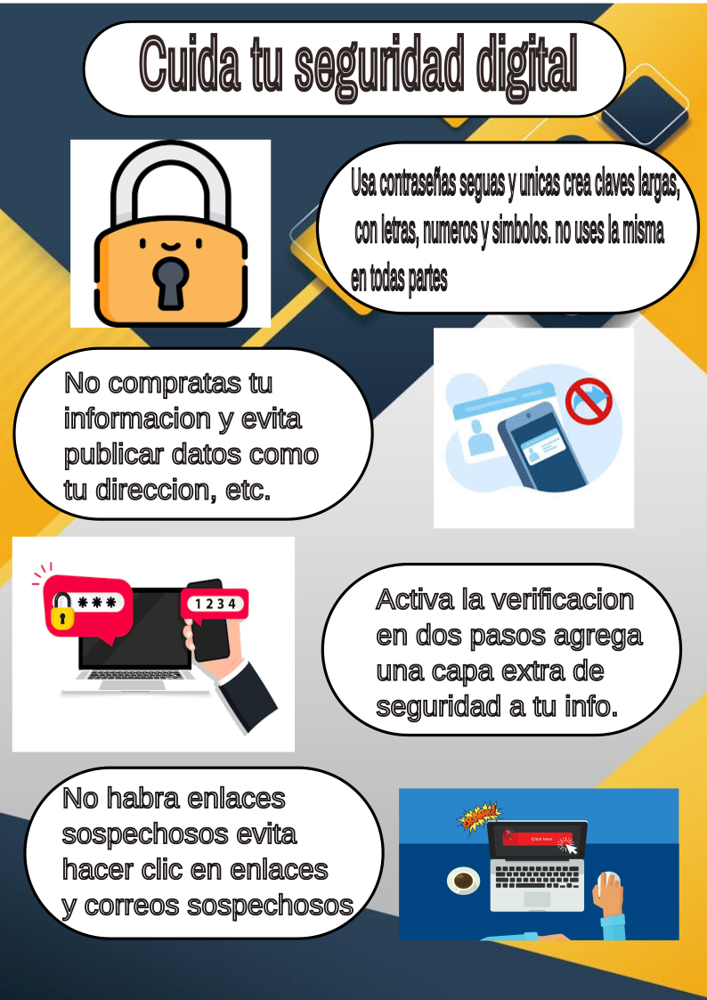

<!DOCTYPE html>
<html lang="en"></html>

<head>
 <link rel="stylesheet" href="index.css">

    <title>Software Libre</title>
</head>

<body>

<header>
        <h1>Software Libre</h1>
</header>

<main>
    

            <h2>¿Qué es Software Libre?</h2>
        <p>El Software Libre es aquel que respeta la libertad de los usuarios para ejecutar, copiar, distribuir, estudiar, modificar y mejorar los programas. Su principal característica es que el código fuente está disponible, lo que permite aprender y colaborar con otras personas.</p>
        <a href="https://es.wikipedia.org/wiki/Software_libre"target="_blank">Software libre</a>
    <hr>
            <h2>Las 4 libertades del Software Libre</h2>
    

       <ol>
          <li>Usar el programa con cualquier propósito.
          </li>
          <li>Estudiar cómo funciona el programa y adaptarlo a tus necesidades (requiere acceso al código fuente).</li>
          <li>Distribuir copias del programa para ayudar a otros.</li>
          <li>Mejorar el programa y compartir esas mejoras con la comunidad.
          </li>
      </ol>

            <h2>Licencias de Software Libre</h2>
        <p>Para que un programa sea considerado libre, debe estar bajo una licencia libre, como:</p>
            <ul>
                <li>GPL (General Public License)</li>
                <li>MIT</li>
                <li>Apache</li>
                <li>BSD</li>
            </ul>
        <p>Estas licencias garantizan legalmente las libertades del usuario.
        </p>
            <h2>Algunas ventajas del software libre</h2>
            <h4>Libertad y flexibilidad</h4>
        <p>Los usuarios tienen el control sobre el software, pudiendo modificarlo y adaptarlo a sus necesidades, así como distribuirlo libremente. </p>
            <h4>Control de la información</h4>
        <p>Al tener acceso al código fuente, los usuarios pueden entender cómo funciona el software y cómo maneja sus datos, lo que aumenta la confianza y la seguridad. </p>
            <h4>Seguridad</h4>
        <p>El código abierto permite que una comunidad de usuarios revise y corrija vulnerabilidades, lo que puede resultar en un software más seguro y confiable. </p>
            <h4>Aprendizaje y formación</h4>
        <p>El software libre permite acceder al código fuente y aprender sobre su funcionamiento, lo que facilita la formación de nuevos profesionales en tecnología. </p>

            <h2>Algunas desventajas del software libre</h2>
            <h4>Curva de aprendizaje</h4>
        <p>Algunos programas de software libre pueden tener interfaces menos intuitivas o requerir un mayor conocimiento técnico para su uso eficaz, lo que puede dificultar la adopción por parte de usuarios menos experimentados. 
        </p>
            <h4>Soporte técnico</h4>
        <p>A diferencia del software propietario, el soporte técnico para software libre suele provenir de la comunidad de usuarios y desarrolladores, lo que puede resultar en tiempos de respuesta más lentos o una calidad de soporte inconsistente. </p>
            <h4>Variedad de versiones</h4>
        <p>La naturaleza abierta del software libre puede llevar a la creación de múltiples versiones y forks del mismo programa, lo que puede generar confusión y dificultar la elección de la versión más adecuada. 
        </p>
            <h4>Conocimiento técnico</h4> 
        <p>Aunque el software libre se ha democratizado, algunos programas aún requieren conocimientos técnicos para su instalación, configuración y mantenimiento. 
        </p>
            <h4>Seguridad y estabilidad</h4>
        <p>Aunque muchos programas de software libre son robustos y seguros, la falta de una entidad centralizada que garantice la calidad puede llevar a vulnerabilidades si no se mantienen las actualizaciones y la comunidad no es activa. </p>

        <hr>

            <h1>Software Libre en la ESRN 19</h1>
                
            <h2>¿Qué trabajamos en la materia en nuestra secundaria?</h2>
        
        <p>Lo que estuvimos trabajando al principio en el primer cuatrimestre de este año 2025 fue la introduccion a la materia,¿A que nos referimos con esto?, basicamente es saber lo que es el software libre, como bien dice el nombre es libre y nos permite modificar libremenye. Trabajamos principalmente todos los sistemas operativos que sean libres como por ejemplo Linux y tambien los sistemas operativos propietarios como lo es Windowns,y descubrimos todas las ventajas y desventajas que tienen ambas. </p>
        <p>Luego de introducirnos al tema,comenzamos a usar aplicaciones de software libre, en este caso Inkscape es una aplicacion de edicion de imagen podes hacer portadas,imagenes personalizadas con tipografias diferentes un ejemplo una tipografia en movimiento,vectorizar una imagen, recortes, etc.</p>
        <p>Este segundo cuatrimestre se sigue trabajando con la misma aplicacion en este caso haciendo flyers,juegos para imprimir y tambien afiches informativos sobre la materia contando todo lo que se usa en software libre y todo aquello que lo abarca.</p>
            <h2>Mi experiencia en software libre</h2>
        <p>Mi experiencia en software libre fue una nueva forma de aprender a diseñar imagenes sin necesidad de usar algun otro editor, sino que con una aplicacion de software libre tambien lo puedo hacer.
             Basicamente es una buena forma  para aprender a editar con la aplicacion en este caso inkscape, y no solo eso sino que aprendi todo lo que es el software libre y todo lo que abarca en ello.
        </p>
            <h3>Estos son algunos ejemplos de las aplicaciones y navegadores que usamos en nuestra materia..</h3>
            <h3>Navegadores</h3>
                <ul>
                    <li>Mozzila firefox</li>
                    <li>Google Chrome</li>
                </ul>
            <h3>
            Aplicaciones
            </h3>
                <ul>
                    <li>Libre office</li>
                    <li>Gimp(Editor de fotos)</li>
                    <li>Inkscape(Editor de graficos vectoriales)</li>
                </ul>
        <p>Generalmente estas aplicaciones usamos en la materia, pero hay muchas mas que se pueden usar para distintas cosas. </p>
    <hr>
            <h3>Ejemplos de trabajos nuestros con la aplicacion Inkscape</h3>

                
                
        <p>Estos son otros trabajos que estuvimos haciendo en inkscape:</p>
        <P>Ejemplo de un Flyer de una inivitacion a una fiesta</P>
                
        <p>Ejemplo de un folleto para hablar sobre la seguridad informatica:</p>
                

        <p>Esto es lo que por ahora se esta trabajando en software libre en la Esrn 19.</p>
            <div class=" .volver">
            <a href="index.html">Volver a la pagina principal</a>
            </div>
</main>


<Footer>
           
     <h5>Proyecto tecnologico informatico 2025 - Francisco Hernandez 5to 2da</h5>

</Footer>

</body>
</html>